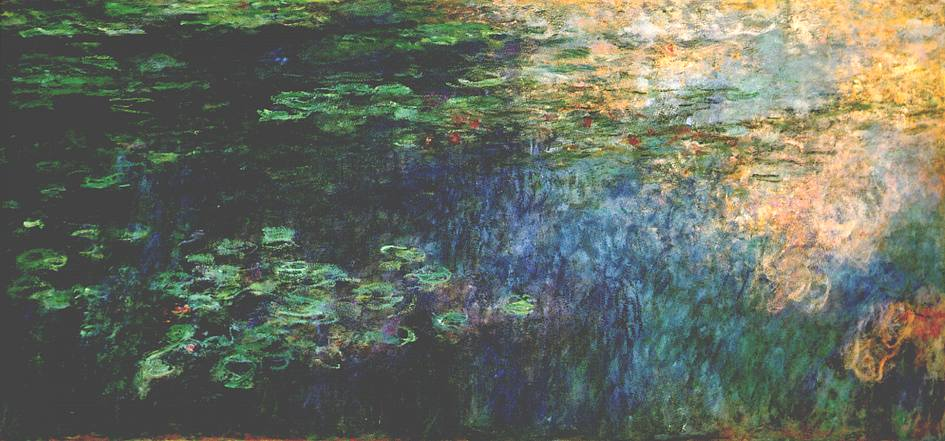
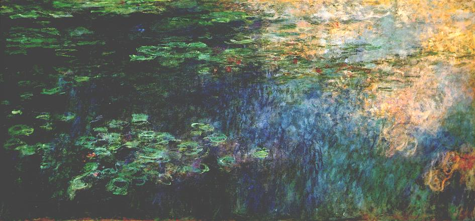
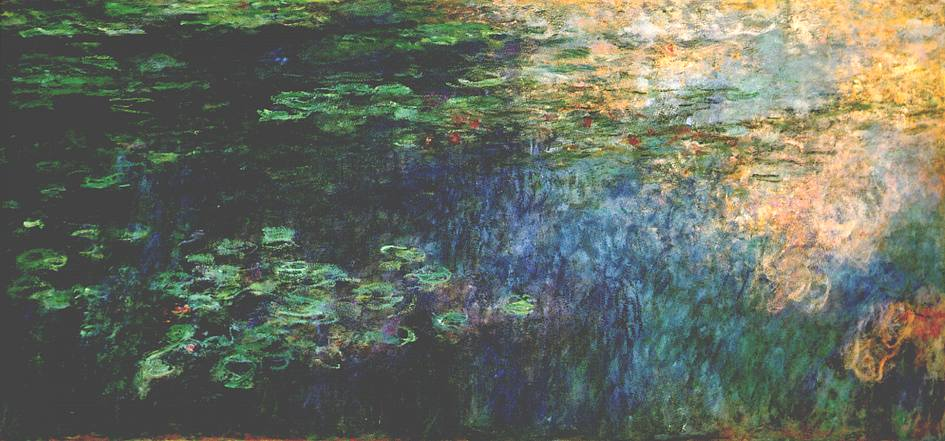

The purpose of art of is washing the dust of daily life off our souls -Pablo Picasso

Acting as a gathering point for anyone and everyone who loves art, La Porte Du Paradis is heaven for artists, art-lovers and historians alike. Hence is remains to be in a position of superior model and recognition.
Located in Paris, France, La Porte Du Paradis is universal both in terms of the wealth of its collections and the great diversity of its visitors. Of the nearly five hundread thousand people who visited this museum in 2017, 69 percent were of overseas origin, with 15 percent from the United States of America, 7 percent from China, and 6 percent from Brazil. To adapt to the diverse nature of this public, we continually strives for greater accessibility. To this end, its initiatives include the progressive widespread use of labeling in two or even three languages to describe the 38,000 artworks exhibited; the revamped numbering of exhibition rooms; the development of a new, more user-friendly floor plan; and the fostering of art education.
La Porte Du Paradis has enjoyed its relationships with over 75 countries and partnerships with other majour museums and iconic brands with historic value. The activities it has conducted over the years with such partners has created a deep, strong understanding between each other.
These activities can take several forms, including scientific consultancy, technical assistance, excavations, artwork loans, exhibition organization, and the reception of official delegations.